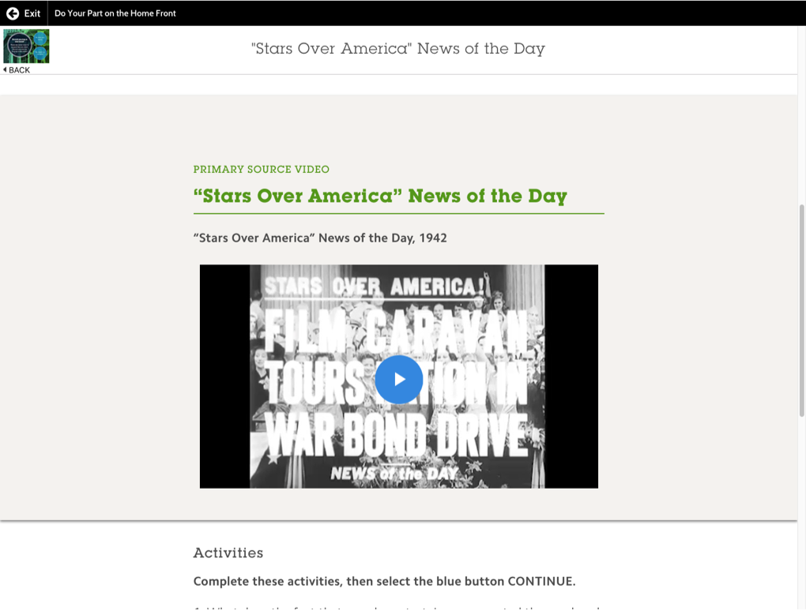
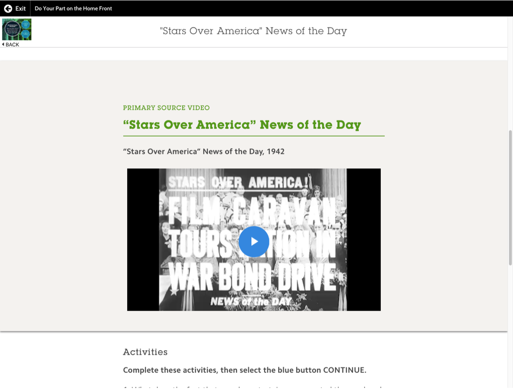

PROJECT IMAGINE

| Role | Lead UX Designer |
|---|---|
| Dates | August 2017 to July 2018 |
| Tools | Axure, Sketch, HTML/CSS/JS |
| Team | Visual Designer, Instructional Designer, Research Team, Editors, Development Vendor |
| 1 | Traditional lecture style classrooms in high school are decreasing in favor of mixing lecture with active learning |
|---|---|
| 2 | Teachers were frustrated that their students were coming into their classrooms without the proper analysis skills |
| 3 | Primary sources are an integral part of all high school lesson plans. |
| 4 | All Social Studies teachers used Document Based Questions for Assessments. |


| Students | Teachers | |
|---|---|---|
| System Usability Score (Mean of 100) | 79.0/100 | 85.7/100 |
| Overall User-friendliness | 4 Excellent 1 Good 0 Okay |
5 Excellent 1 Good 1 Okay |
| Percieved Usefuleness | 4.6/7 | 6.6/7 |
| Net Promoter Score | not measured | 3 Promoter 1 Passive 1 Detractor |
| 1 | Teachers loved the idea of using primary sources |
|---|---|
| 2 | Teachers were not a huge fan of the visual design (even though we explained this was a wireframe without too detailed visuals, the key takeaway was that they wanted images and “high school” level illustrations |
| 3 | Teachers wanted more different kinds of activities. They feel that writing is necessary for alot of cases, but sometimes they want to have more creative solutions. |
| 4 | Teachers feel as if the short answer questions are too open ended. |
| 5 | Some teachers pictured themselves using this as homework for more advanced students, and some teachers pictured themselves putting the students into small groups to complete the assignments together. Teachers did not see themselves using this in a whole class learning session. |
| 6 | Teachers felt as if it might take a long time for them to grade if each student completes individually |

| Extremely engaging | 5 |
|---|---|
| Very engaging | 56 |
| Neutral engagement | 23 |
| Not Very engaging | 13 |
| Extremely unengaging | 12 |
| Pros | Cons |
|---|---|
| Many students noted they program was interesting and contained a lot of good information. Many students noted they enjoyed learning about different perspectives of individuals during the war. Students liked being able to see how different people lived and worked at that time. Some also noted it had a wide variety of activities. Some students mentioned they enjoyed the videos (non-specific). Some students noted they especially liked learning about the Role Play - Francisco |
Students would like less reading/shorter reading passages. Some students mentioned they’d like more teacher guidance because they might need clarity/have confusion about the content or navigating the product. A few Orosi students expressed interest in working through the immersives in small groups. A few students noted they wanted the ability to walk around in the Japanese Incarceration 360 Immersive. Include more activities where students need to interact/engage with each other A few students thought hands-on activities as a part of the instruction would be helpful A few mentioned they wanted less talking within the videos. |


 
